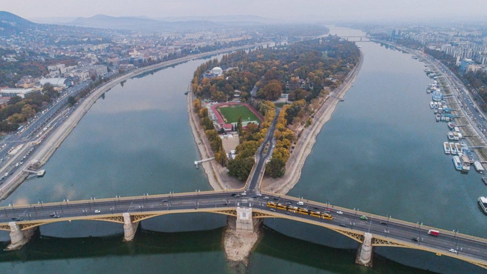

A szállásunk a Duna-folyó Budapesti szakaszának legnagyobb szigetén, a Margit-szigeten lesz.
Sok ágyas szobák lesznek, hogy jobban közösségben tudjunk lenni.
1 éjszaka fogunk itt megszállni, mivel 2 napos lesz a kirándulás.
A szálláson étkezési lehetőség is van, amit egy vacsora és egy reggeli erejéig igénybe is fogunk venni.
Ez egy több emeletes szálló, aminek az alagsorában szabadidős lehetőségek is vannak. pl. konditerem, ping-pong asztal, csocsó
Az ablakból a Dunára és Budapest pesti részére látunk rá, ami nagyon szép látványt nyújt nappal is, de este igazán különleges látvány a kivilágított nagyváros.
